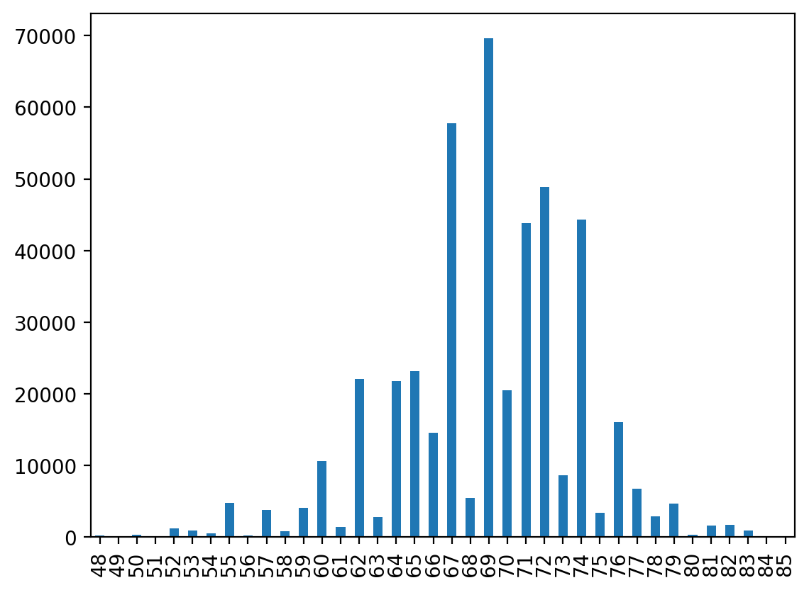
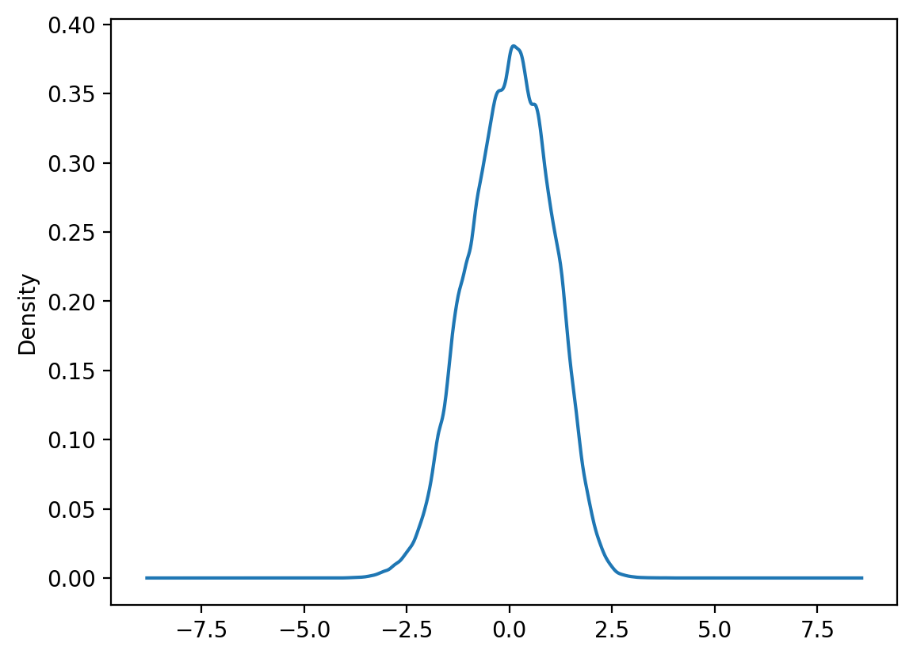
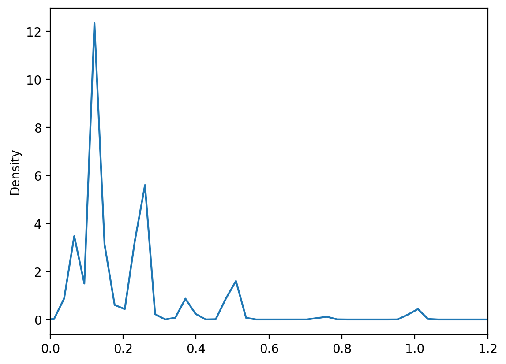
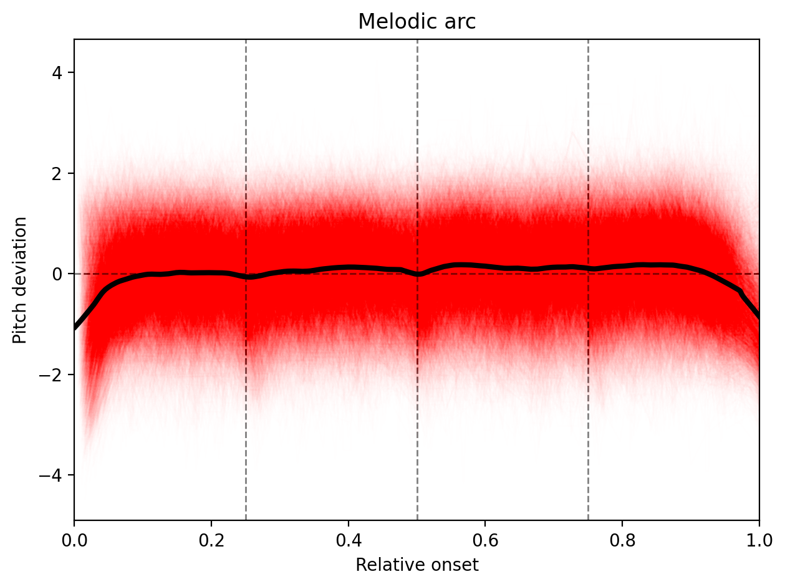

3. Folk Songs¶
[ ]:
import pandas as pd
import music21 as m21
import numpy as np
import statsmodels.api as sm
import matplotlib.pyplot as plt
import matplotlib as mpl
mpl.rc_context(rc=None, fname="../matplotlibrc");
3.1. Melodies¶
[2]:
# parse all
corpora = m21.corpus.getComposer('essenFolksong')
[55]:
german_song = m21.converter.parse(corpora[0])[70]
german_song.show(fmt="musicxml.png", fp="./img/german_song.png")
german_song.show()
[56]:
german_song.show("mid")
[57]:
%%time
# takes about 5 mins
songs = [s for i in range(len(corpora)) for s in m21.converter.parse(corpora[i]) ]
Wall time: 57.5 s
[58]:
len(songs)
[58]:
8514
[62]:
chinese_song = songs[6200]
chinese_song.show(fmt="musicxml.png", fp="./img/chinese_song.png")
chinese_song.show()
[63]:
chinese_song.show("mid")
[65]:
[(note.pitch.midi, note.quarterLength/4) for note in chinese_song.flat.notes][:10]
[65]:
[(72, 0.1875),
(72, 0.0625),
(74, 0.125),
(77, 0.125),
(72, 0.1875),
(74, 0.0625),
(72, 0.125),
(69, 0.125),
(67, 0.125),
(69, 0.0625)]
[66]:
dfs = []
for i in range(len(songs)):
df = pd.DataFrame( [(i, note.pitch.midi, note.quarterLength/4) for note in songs[i].flat.notes ], columns=["song_id", "pitch", "duration"])
df["onset"] = df["duration"].cumsum()
df["rel_onset"] = df["onset"] / df["onset"].max()
df["Z_pitch"] = (df["pitch"] - df["pitch"].mean())/df["pitch"].std(ddof=0)
dfs.append(df)
big_df = pd.concat(dfs).reset_index(drop=True)
big_df.to_csv("data/big_df.csv")
big_df.shape
[66]:
(450596, 6)
[15]:
big_df.head(10)
[15]:
| piece_id | pitch | duration | onset | rel_onset | Z_pitch | |
|---|---|---|---|---|---|---|
| 0 | 0 | 67 | 0.5 | 0.5 | 0.013158 | -1.834390 |
| 1 | 0 | 70 | 0.5 | 1.0 | 0.026316 | -0.748238 |
| 2 | 0 | 71 | 0.5 | 1.5 | 0.039474 | -0.386187 |
| 3 | 0 | 72 | 0.5 | 2.0 | 0.052632 | -0.024137 |
| 4 | 0 | 72 | 0.5 | 2.5 | 0.065789 | -0.024137 |
| 5 | 0 | 74 | 1.0 | 3.5 | 0.092105 | 0.699965 |
| 6 | 0 | 74 | 1.0 | 4.5 | 0.118421 | 0.699965 |
| 7 | 0 | 74 | 1.0 | 5.5 | 0.144737 | 0.699965 |
| 8 | 0 | 74 | 0.5 | 6.0 | 0.157895 | 0.699965 |
| 9 | 0 | 74 | 0.5 | 6.5 | 0.171053 | 0.699965 |
[16]:
big_df.tail()
[16]:
| piece_id | pitch | duration | onset | rel_onset | Z_pitch | |
|---|---|---|---|---|---|---|
| 450591 | 8513 | 71 | 0.0625 | 7.1250 | 0.934426 | 0.696113 |
| 450592 | 8513 | 69 | 0.0625 | 7.1875 | 0.942623 | 0.099445 |
| 450593 | 8513 | 73 | 0.0625 | 7.2500 | 0.950820 | 1.292781 |
| 450594 | 8513 | 71 | 0.2500 | 7.5000 | 0.983607 | 0.696113 |
| 450595 | 8513 | 69 | 0.1250 | 7.6250 | 1.000000 | 0.099445 |
[17]:
big_df.sample(5)
[17]:
| piece_id | pitch | duration | onset | rel_onset | Z_pitch | |
|---|---|---|---|---|---|---|
| 84723 | 1952 | 62 | 0.250 | 3.000 | 0.206897 | -2.068852 |
| 208027 | 4441 | 67 | 0.375 | 0.625 | 0.086207 | -0.850686 |
| 114121 | 2463 | 62 | 0.375 | 10.375 | 0.576389 | 0.879004 |
| 222508 | 4724 | 72 | 0.250 | 20.500 | 0.881720 | 0.771902 |
| 352331 | 6615 | 67 | 0.250 | 4.000 | 0.266667 | 0.635128 |
[18]:
big_df["pitch"].value_counts().sort_index().plot(kind="bar");

[19]:
# FIRST concat dfs and THEN create new cols
[20]:
big_df["Z_pitch"].plot(kind="kde");

[21]:
big_df["duration"].plot(kind="kde",xlim=(0,1.2));

[ ]:
3.2. The melodic arc¶
[ ]:
[30]:
fig, ax = plt.subplots()
plt.xlim(0,1)
ax.axvline(.25, lw=1, ls="--", c="gray")
ax.axvline(.5, lw=1, ls="--", c="gray")
ax.axvline(.75, lw=1, ls="--", c="gray")
ax.axhline(0, lw=1, ls="--", c="gray")
grouped = big_df.groupby("piece_id")
for i, g in grouped:
x = g["rel_onset"].values
y = g["Z_pitch"].values
ax.plot(x,y, c="red", lw=1, alpha=0.0025)
lowess = sm.nonparametric.lowess
big_x = big_df["rel_onset"].values
big_y = big_df["Z_pitch"].values
big_z = lowess(big_y, big_x, frac=5/100)
ax.plot(big_z[:,0], big_z[:,1], c="black", lw=3)
plt.title("Melodic arc")
plt.xlabel("Relative onset")
plt.ylabel("Pitch deviation")
plt.tight_layout()
plt.savefig("img/melodic_arc.png", dpi=300)
plt.show()

3.3. Intervals¶
[ ]: